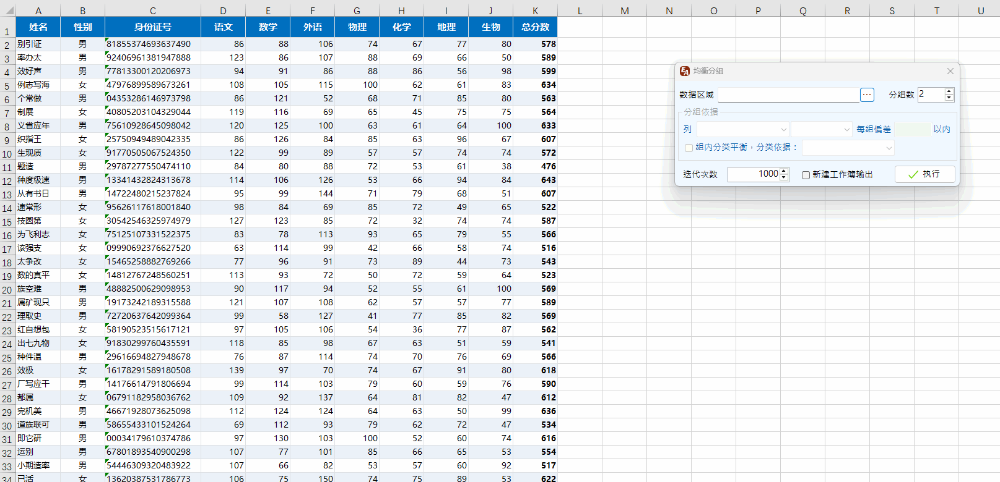
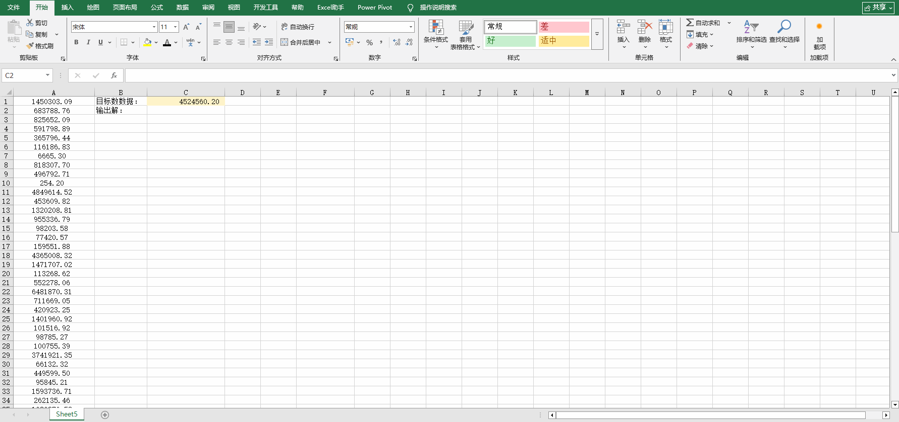
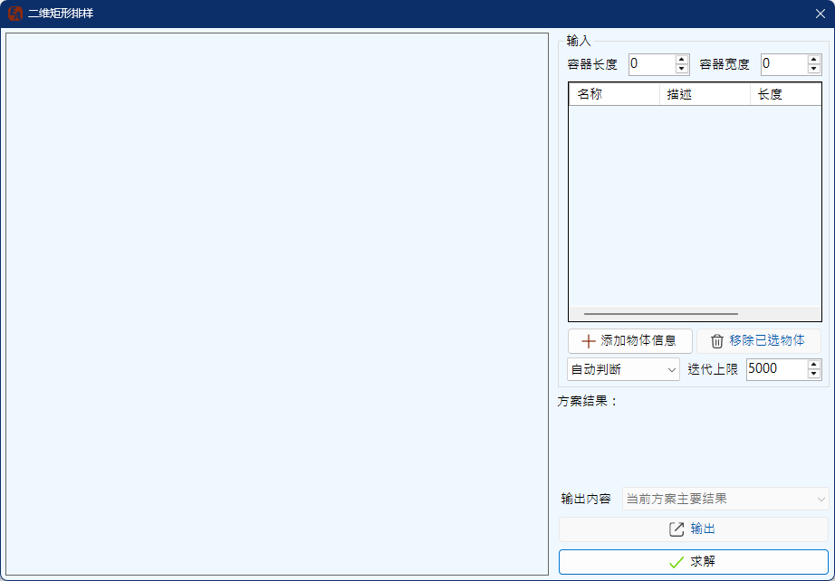
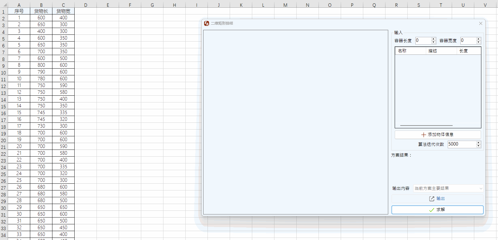

Excel助手Ribbon菜单中数据操作区域点击其他操作-均衡分组可调出如下界面，该功能主要用于将数据，根据其中的某一字段的统计值进行均衡分组。 例如，将100个学生，按照成绩分为3组，并且要使每组的平均成绩大致相当。
数据区域指要用于分组的数据，选择数据时，不要包括标题行。
分组数即要将数据分成的组数，程序会自动将每组的数据均衡，如能等分，则等分；如不能，则任意两组数据数目相差1个。
分组依据选择一个列作为分组依据，选择一个统计值，统计值暂只支持平均值、中位值、和、标准差四类。偏差为每组统计值相差的范围。
程序分组的原理为：将数据排序，并分配到每组内，然后挑拣统计值相差最大的两组进行数值交换，直至交换后的统计值差值小于交换前，则完成一次迭代，并检查是否满足偏差要求。如不满足，则继续迭代，直至设定的迭代次数上限。
均衡分组示例：

使用均衡分组功能需注意如下事项：
Excel助手Ribbon菜单中数据操作区域点击其他操作-凑数求解可调出如下界面，该功能主要用于求子集和问题。 给定一个数组，求是否存在组合，使得组合的和等于目标值，即凑数问题。
目标值凑数的目标值，有两种方式设定目标值，一种是精确等于，一种是介于两个值之间的范围设置。当设为范围值时，解的范围位于上下限之间。当取消勾选相对时，目标值范围以设定的上下限为范围，否则上下限是相对于目标值而言。例如：目标值为10,000，相对下限-100，相对上限100，则目标和范围为9,900～10,100。小数位数即计算精度，程序内部是将小数转换为整型数进行运算，为避免数据过大，程序支持的最高精度为5位小数。调整小数位数将实时改变目标值的小数位数。
数据源选择用于凑数的数据源。程序将载入选择范围内的数据类型的数字，忽略非数据信息。乱序选项，当勾选时，每次开始凑数，程序将随机排序数据源，以达到不同的效果。
输出位置选择一个区域或单元格，用于列向输出结果。无论选择是否区域，程序都从选择的第一个单元格开始向下列向输出，直至解输出完成或者达到Excel行数上限。连接符指在输出数据解时，程序用于连接数据的符号，默认为加号，且不能为空，否则自动重置为加号。
计算解总数限制：表示希望程序最多求解多少组解，当程序求得设定的解的数量时，即停止计算。如果设为-1表示运算至程序设定的解数量上限（内部设定200,000，避免运行时间过长或者内存使用太大）。
允许重复选数：程序可以两种方式计算解，一种是不允许重复选择数据，程序在开始求解之初会去掉重复的值；另一种是允许重复的选择数据，此时同一数据会多次选择，只要能满足凑出目标数值。当重复选数模式下，如果求得解后，程序还会根据设定的重复次数筛选解，剔除不满足重复次数限制的解。0表示不限制重复次数。
解包含数字限制：即子集的大小限制，如果设定，那么选择的数字不会超过设定值，0表示不限制子集数字个数。
凑数求解示例：

使用凑数求解功能需注意如下事项：
二维矩形排样问题可以理解为，有一系列的矩形尺寸的货物，想要将不同的货物放入矩形货仓内，怎么放可以最大程度的利用货仓的面积。该问题很难得到最优的解，但是通过本程序，可以通过随机算法，得到较优化的排列以获得较高的利用率。排样算法的界面如下：

输入部分，需要输入容器（即货仓）的平面尺寸，通过添加物体信息按钮，可以添加一系列规格的货物的信息。每个物体可以输入4个字段，包括名称（字符）、描述（字符）、长度（数字）和宽度（数字）。名称和描述不是必须的，但是长度和宽度数据是必须，否则将忽略此行数据。因此添加物体信息时，可以选取2~4列的数据，当选取2列数据时对应录入为长度、宽度；当选取3列数据时，对应录入为名称、长度、宽度；当选取4列数据时，对应录入为名称、描述、长度、宽度。
每当算法运行之后，单击删除已选物体按钮可以将本方案中已选择的物体删除，剩余物体可以再次运行算法排样。
算法类型选择，程序提供3种类型的算法选择，1-自动判断；2-左下角优先放置；3-四角优先放置。其中自动判断为程序根据输入的物体信息离散程度自行判断采用左下角优先还是四角优先。一般情况下，对于物体尺寸离散程度较大时，采用左下角优先的算法会得到更优的结果，而当物体尺寸相近或是相同时，采用四角优先的算法会得到更优的结果。
算法迭代次数为随机试算次数，默认为5000次，当物体数量较大时，每次迭代使用的时间将会越长，当然算法也会以当前方案占用率基本接近1停止。但是大多数情况下，占用率都不会等于1。算法运行的过程中会报告迭代次数以及当前已获得的最大占用率。
方案结果会在算法结束后显示当前方案的情况，选取的物体数量、最大占用长度、宽度、最大占用率以及空置率。
输出内容包含4个输出选项：1、当前方案主要结果；2、当前方案选中的物体序列：名称+位置；3、当前方案的排列图形。选择了输出内容后单击下方的输出按钮输出结果。上述前2项输出为文字内容，第3项为图形。
当输入完成后，单击求解按钮即可开始运行算法，算法运行过程中会弹出进度窗口报告迭代次数和最大占用率，如感觉运算时间过长，可单击进度窗口中的取消按钮停止运算，此时将以当前最大占用率输出结果。算法运行结束后，左侧的区域将可视化输出结果，其中每个被放置的物体显示的为名称编号，且会在物体列表中区别显示。
二维矩形排样求解示例

使用二维矩形排样功能需注意如下事项：